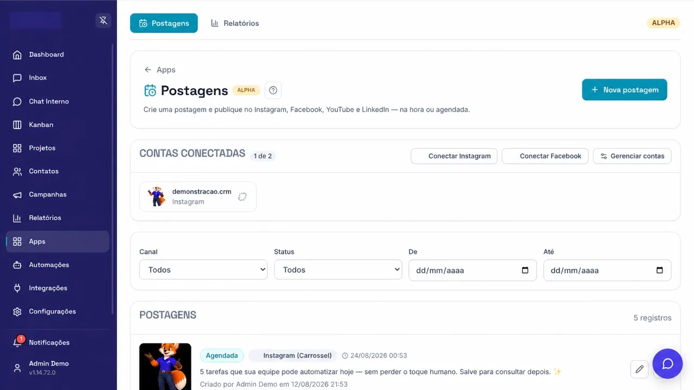
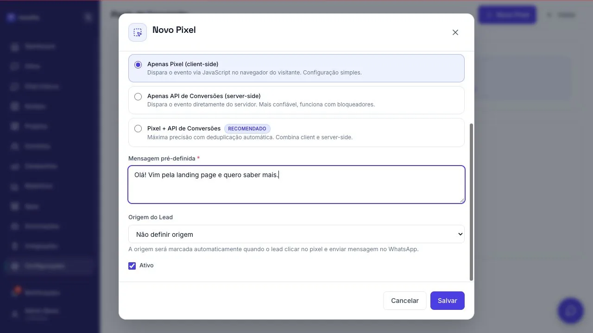

← Ver todos os recursos
MARKETING
Anúncios e redes sociais
Acompanhe campanhas, programe conteúdo e relacione conversões ao funil.

Como usar o recurso
- Conecte a conta de anúncios para consultar campanhas e seus resultados.
- Use os relatórios e eventos do funil para acompanhar conversões por origem.
Capturas da FunnelOps, plataforma-base do KAIROS CRM. Ver documentação visual ↗
Calendário de postagens

Pixels de conversão
